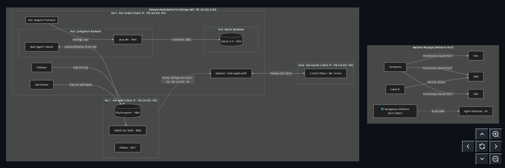
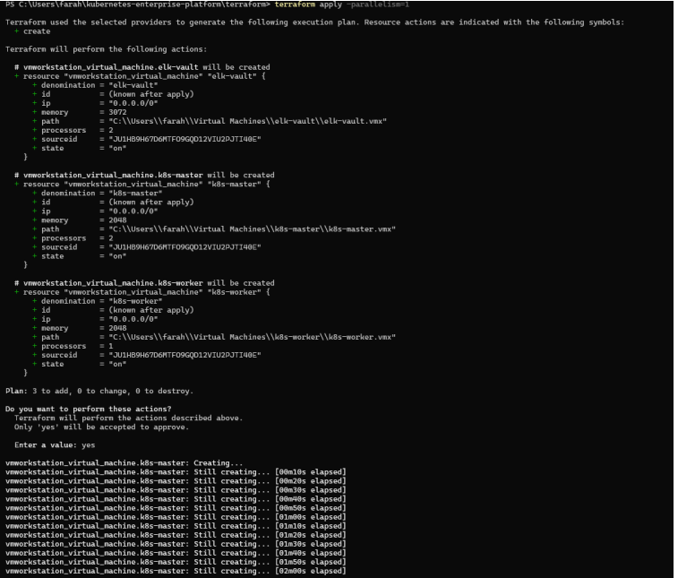
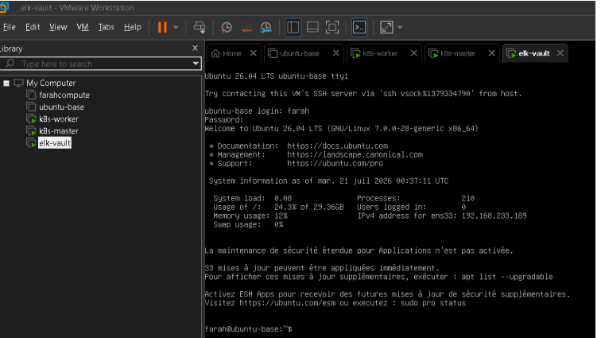
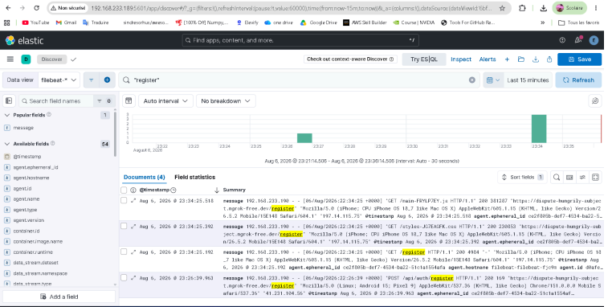
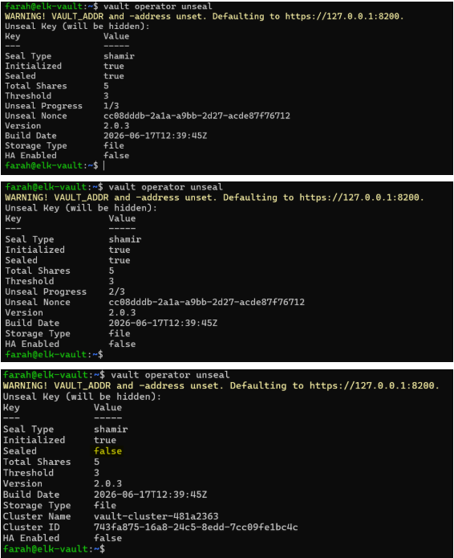
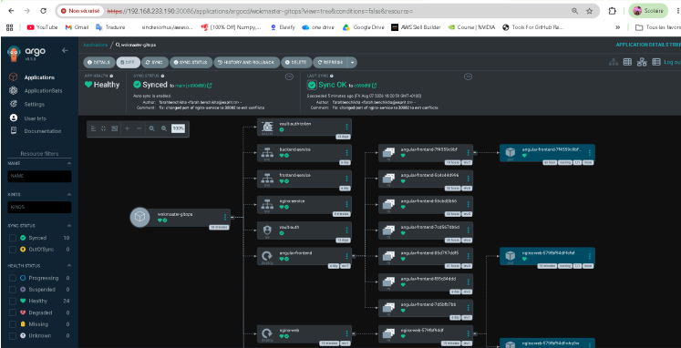
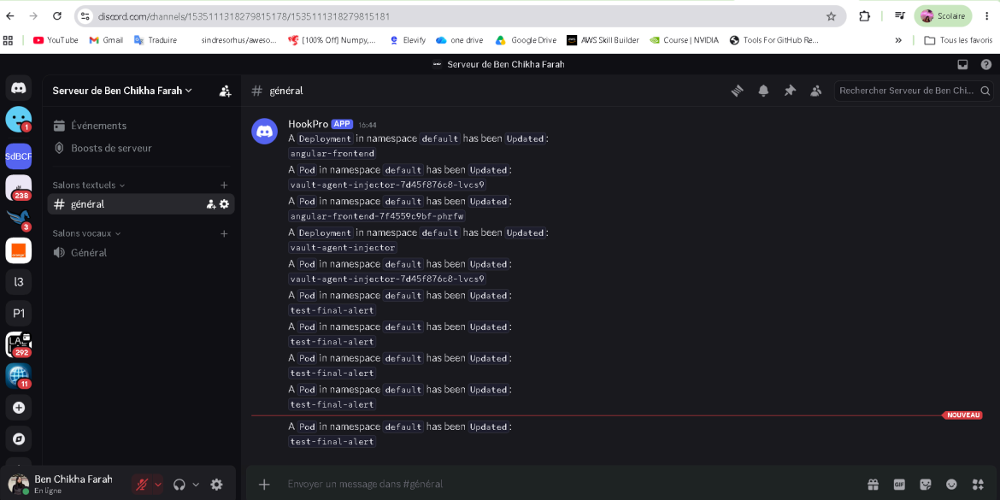

Kubernetes Enterprise Platform (KEP)
Plateforme d'orchestration de conteneurs entreprise avec haute disponibilité, sécurité et observabilité
Le Contexte du Stage (Cloud & Cybersécurité)
Ce stage s'inscrit dans la mise en situation réelle de conception, déploiement et exploitation d'une solution professionnelle d'orchestration. La plateforme Kubernetes Enterprise Platform (KEP) accueille et isole l'application microservices de test WokMaster (Angular & Spring Boot) afin de valider ses fonctionnalités de haute disponibilité, de sécurité des secrets (Vault) et de centralisation des logs (ELK).
🛠️ Boîte à Outils DevOps
La suite logicielle composant la plateforme d'infrastructure
La Suite Technologique Déployée
Chaque outil a été sélectionné pour sa robustesse industrielle et s'intègre de façon cohérente dans le pipeline d'automatisation.
Terraform
Provisioning de l'infrastructure virtuelle sous VMware Workstation.
Ansible
Configuration des serveurs et installation de Docker et de Kubernetes.
Kubernetes
Orchestrateur de conteneurs pour la haute disponibilité.
HashiCorp Vault
Gestion sécurisée des secrets et injection dynamique.
Kibana & ELK
Centralisation et indexation des journaux (Logs).
Docker
Création d'images multi-stage pour Angular et Spring Boot.
ArgoCD
Déploiement continu automatisé basé sur le GitOps.
🏗️ Schéma d'Architecture Général
Voici l'illustration graphique de la structure globale de notre plateforme DevOps (VMs, conteneurs, agents d'observabilité et coffre-fort de sécurité).

Agrandir le schéma d'architecture 🔍🎯 Cohérence Globale de la Chaîne d'Outils (DevOps Toolchain)
L'ensemble des technologies sélectionnées ne se contente pas de coexister ; elles forment un écosystème DevOps fermé et automatisé :
IaC & Configuration
Terraform & Ansible : Terraform dresse l'infrastructure virtuelle brute (VMs, CPU, RAM) et Ansible prend le relais pour configurer l'OS et le cluster, éliminant l'erreur humaine.
Orchestration
Docker & Kubernetes : Docker encapsule le code dans des images optimisées (multi-stage), et Kubernetes orchestre et maintient les conteneurs en haute disponibilité.
Sécurité DevSecOps
HashiCorp Vault : Aucun mot de passe n'est écrit en clair. Le backend Spring Boot récupère ses accès MySQL de façon éphémère en mémoire vive via le Vault Injector.
Observabilité
Filebeat & Pile ELK : Filebeat extrait les logs de tous les pods à la volée pour les stocker dans Elasticsearch, permettant leur analyse historique sur Kibana.
Mise en Prod Continue
GitOps (ArgoCD) : Le dépôt GitHub est la source unique de vérité. Toute modification réaligne le cluster en 3 secondes, éliminant la dérive de configuration.
1. Provisioning IaC (Terraform)
Déploiement reproductible de l'infrastructure sous VMware
Automatisation du clonage de machines
Pour piloter l'API Rest locale de VMware Workstation Pro (vmrest.exe), nous déclarons nos ressources dans un script Terraform. Le clonage s'effectue à partir d'un modèle d'OS Ubuntu Server préalablement installé.
cd C:\Users\farah\kubernetes-enterprise-platform\terraform
terraform init
terraform apply -parallelism=1
# Extrait de C:\Users\farah\kubernetes-enterprise-platform\terraform\main.tf
resource "vmworkstation_virtual_machine" "k8s-worker" {
sourceid = var.base_vm_id
denomination = "k8s-worker"
path = "${var.vm_base_dir}\\k8s-worker\\k8s-worker.vmx"
processors = 1
memory = 4096
state = "on"
}main.tf
Agrandir la capture d'écran (Terraform apply) 🔍2. Initialisation du Cluster Kubernetes
Jonction des nœuds de calcul et activation du réseau Calico
Configuration du Control Plane et du Worker
Ansible exécute un playbook qui prépare l'OS (désactivation du Swap, chargement des modules noyau br_netfilter et paramétrage de containerd).
Commandes d'initialisation sur k8s-master :
sudo kubeadm init --pod-network-cidr=192.168.0.0/16 --apiserver-advertise-address=192.168.233.188
Calico CNI Installation :
kubectl apply -f https://raw.githubusercontent.com/projectcalico/calico/v3.28.0/manifests/calico.yaml

Agrandir la capture d'écran (VMs Actives) 🔍3. Observabilité Centralisée (ELK)
Indexation des journaux conteneurs en temps réel
Collecte des logs avec Filebeat
Le conteneur Filebeat tourne en tâche de fond sur chaque nœud, lit les logs consoles bruts et les envoie à Elasticsearch.
# filebeat-values.yaml
filebeatConfig:
filebeat.yml: |
filebeat.inputs:
- type: container
paths:
- /var/log/containers/*.log
output.elasticsearch:
hosts: ["https://192.168.233.189:9200"]
username: "elastic"
password: "i1*I_3YeN5XP933Wj9Gk"
ssl.verification_mode: "none"filebeat-values.yaml
Agrandir la capture d'écran (Kibana Logs) 🔍4. Coffre-fort & Sécurité (Vault)
Intégration Kubernetes et injection de secrets à la volée
Déverrouillage et authentification deleguée
À chaque redémarrage, Vault doit être déverrouillé à l'aide d'au moins 3 clés différentes.
export VAULT_SKIP_VERIFY=true
vault operator unseal

Agrandir la capture d'écran (Vault Unseal) 🔍5. Déploiement Continu GitOps (ArgoCD)
Le code source Git comme pilote de votre infrastructure
Gestion déclarative de l'application WokMaster
ArgoCD compare l'état défini sur GitHub avec l'état en cours d'exécution. Il déploie la base de données MySQL, l'API Java Spring et le site web Angular.
# argocd-app.yaml
apiVersion: argoproj.io/v1alpha1
kind: Application
metadata:
name: wokmaster-gitops
namespace: argocd
spec:
project: default
source:
repoURL: 'https://github.com/farahbenchikha/kubernetes-enterprise-platform.git'
targetRevision: main
path: kubernetes
destination:
server: 'https://kubernetes.default.svc'
namespace: default
syncPolicy:
automated:
prune: true
selfHeal: trueargocd-app.yaml
Agrandir la capture d'écran (ArgoCD Sync Tree) 🔍6. Sauvegardes & Alertes Réseau
Routines de sécurité et notifications d'événements
Sauvegarde de Base MySQL & Alertes Discord
Un script de sauvegarde logical backup backup-db.sh se connecte de façon autonome au pod MySQL actif, exécute mysqldump avec l'option --no-tablespaces et stocke le fichier .sql horodaté sur la VM.
chmod +x backup-db.sh
./backup-db.sh

Agrandir la capture d'écran (Alertes Discord) 🔍⚠️ Résolution des Pannes de Production
Les défis techniques résolus durant le déploiement de la plateforme
Rapport de Dépannage Ingénieur
1. Erreur d'accès réseau I/O Timeout vers Vault
Problématique : Les pods applicatifs du Worker (192.168.254.xxx) n'arrivaient pas à se connecter à la VM Vault externe (192.168.233.189). La VM Vault ignorait la route de retour et jetait les paquets.
Solution technique appliquée
Ajout d'une route statique pérenne sur la table de routage de la VM elk-vault :
sudo ip route add 192.168.0.0/16 via 192.168.233.190
2. Conflit d'allocation de ports NodePort sous ArgoCD
Problématique : ArgoCD refusait de valider la synchronisation en déclarant : NodePort 30080 is already allocated car Nginx et Spring Boot Backend visaient le même port physique.
Solution technique appliquée
Modification de web-app.yaml pour isoler l'application de test Nginx sur le port 30082, libérant la connexion de l'API sur le port 30080.
3. Erreur DNS interne de Kubernetes (Server Misbehaving)
Problématique : Kubewatch ne parvenait pas à envoyer ses alertes vers l'API de Discord car CoreDNS transmettait les requêtes à l'hôte local inatteignable 127.0.0.53.
Solution technique appliquée
Patch de la ConfigMap de CoreDNS pour forcer l'utilisation de DNS publics :
kubectl get configmap coredns -n kube-system -o yaml | sed 's/forward . \/etc\/resolv.conf/forward . 8.8.8.8 1.1.1.1/g' | kubectl apply -f -
🎥 Galerie Vidéo de Démonstrations
Preuve visuelle et dynamique du fonctionnement de la plateforme